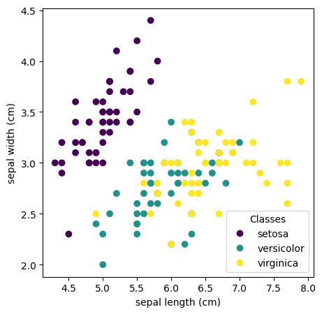

We will use conformalization techniques to characterize the uncertainty so that certain statistical guarantees can be provided for the predictions. Most importantly, we will predict sets (not points). A set is general mathematical object that subsumes both intervals, labels, and categories.
Further, conformal procedures allow us to tune classifiers in a much more principled way. The traditional way of tuning a classifier is to plot the ROC curves and pick an operating point. The levers typically are precision, recall, fpr, tpr, etc.
Tuning a binary classifier is actually straightforward. But how does one pick a point or sets of points when there are more than two classes.
Later we will see, the coverage probability and conformalization procedures turn this multivariate decision problem into a single variable decision problem.
from sklearn.datasets import load_irisimport matplotlib.pyplot as plt# we will use only two features but all the classesiris = load_iris()y = iris.targetX = iris.data[:, 0:2]# look at the dataimport matplotlib.pyplot as pltimport numpy as np_, ax = plt.subplots(figsize=(5,5))scatter = ax.scatter(iris.data[:, 0], iris.data[:, 1], c=iris.target)ax.set(xlabel=iris.feature_names[0], ylabel=iris.feature_names[1])_ = ax.legend( scatter.legend_elements()[0], iris.target_names, loc="lower right", title="Classes")

from sklearn.model_selection import train_test_splittrain_ratio =0.70calibration_ratio =0.15test_ratio =0.15# train is now 70% of the entire data setX_train, X_test, y_train, y_test = train_test_split(X, y, test_size=1- train_ratio, shuffle=True)# test is now 10% of the initial data set# validation is now 15% of the initial data setX_cal, X_test, y_cal, y_test = train_test_split(X_test, y_test, test_size=test_ratio/(test_ratio + calibration_ratio),shuffle=True) print(X_train.shape, X_cal.shape, X_test.shape)print(y_train.shape, y_cal.shape, y_test.shape)
(104, 2) (23, 2) (23, 2)
(104,) (23,) (23,)
# Fit a logistic regression modelfrom sklearn.linear_model import LogisticRegressionclf = LogisticRegression(random_state=0,multi_class='multinomial').fit(X_train, y_train)yh_train = clf.predict(X_train)from sklearn.metrics import classification_reportprint('on train set')print(classification_report(y_train, yh_train, target_names=iris.target_names))yh_test = clf.predict(X_test)print('on test set')print(classification_report(y_test, yh_test, target_names=iris.target_names))
/opt/miniconda3/envs/ai839/lib/python3.10/site-packages/sklearn/linear_model/_logistic.py:1247: FutureWarning: 'multi_class' was deprecated in version 1.5 and will be removed in 1.7. From then on, it will always use 'multinomial'. Leave it to its default value to avoid this warning.
warnings.warn(
# Implement Expected Calibration Error# Ref: https://towardsdatascience.com/expected-calibration-error-ece-a-step-by-step-visual-explanation-with-python-code-c3e9aa12937d)def expected_calibration_error(samples, true_labels, M=5):# uniform binning approach with M number of bins bin_boundaries = np.linspace(0, 1, M +1) bin_lowers = bin_boundaries[:-1] bin_uppers = bin_boundaries[1:]# get max probability per sample i confidences = np.max(samples, axis=1)# get predictions from confidences (positional in this case) predicted_label = np.argmax(samples, axis=1)# get a boolean list of correct/false predictions accuracies = predicted_label==true_labels ece = np.zeros(1)for bin_lower, bin_upper inzip(bin_lowers, bin_uppers):# determine if sample is in bin m (between bin lower & upper) in_bin = np.logical_and(confidences > bin_lower.item(), confidences <= bin_upper.item())# can calculate the empirical probability of a sample falling into bin m: (|Bm|/n) prob_in_bin = in_bin.mean()if prob_in_bin.item() >0:# get the accuracy of bin m: acc(Bm) accuracy_in_bin = accuracies[in_bin].mean()# get the average confidence of bin m: conf(Bm) avg_confidence_in_bin = confidences[in_bin].mean()# calculate |acc(Bm) - conf(Bm)| * (|Bm|/n) for bin m and add to the total ECE ece += np.abs(avg_confidence_in_bin - accuracy_in_bin) * prob_in_binreturn ece# ece on train setpred_proba_train = clf.predict_proba(X_train)ece_train = expected_calibration_error(pred_proba_train, y_train, M=10)print('ece on train set',ece_train)pred_proba_test = clf.predict_proba(X_test)ece_test = expected_calibration_error(pred_proba_test, y_test, M=5)print('ece on test set',ece_test)
ece on train set [0.07482647]
ece on test set [0.11760297]
# Wrap the trained classifier into PUNCC# Create a wrapper of the random forest model to redefine its predict method# into logits predictions. Make sure to subclass BasePredictor.# Note that we needed to build a new wrapper (over BasePredictor) only because# the predict(.) method of RandomForestClassifier does not predict logits.# Otherwise, it is enough to use BasePredictor (e.g., neural network with softmax).from deel.puncc.classification import RAPSfrom deel.puncc.api.prediction import BasePredictorfrom deel.puncc.metrics import classification_mean_coveragefrom deel.puncc.metrics import classification_mean_sizeimport numpy as npclass LogisticPredictor(BasePredictor):def predict(self, X, **kwargs):returnself.model.predict_proba(X, **kwargs)# Wrap model in the newly created RFPredictorclf_predictor = LogisticPredictor(clf)# CP method initializationraps_cp = RAPS(clf_predictor, train=True, k_reg=2, lambd=0)# The call to `fit` trains (with flag True) the model and computes the nonconformity# scores on the calibration setraps_cp.fit(X_fit=X_train, y_fit=y_train, X_calib=X_cal, y_calib=y_cal)# The predict method infers prediction intervals with respect to# the significance level alpha = 20%y_pred, set_pred = raps_cp.predict(X_test, alpha=.1)# Compute marginal coveragecoverage = classification_mean_coverage(y_test, set_pred)size = classification_mean_size(set_pred)print(f"Marginal coverage: {np.round(coverage, 2)}")print(f"Average prediction set size: {np.round(size, 2)}")
Marginal coverage: 0.87
Average prediction set size: 1.7
/opt/miniconda3/envs/ai839/lib/python3.10/site-packages/sklearn/linear_model/_logistic.py:1247: FutureWarning: 'multi_class' was deprecated in version 1.5 and will be removed in 1.7. From then on, it will always use 'multinomial'. Leave it to its default value to avoid this warning.
warnings.warn(
# Let us subset data s.t we will decide to predict if the set size is 1. o.w we will abstain# for illustration, we will do it on train set.from sklearn.metrics import accuracy_scorey_pred, set_pred = raps_cp.predict(X_train, alpha=.1)ind = np.array([len(x)==1for x in set_pred])Xsub_train = X_train[ind,:]ysub_train = y_train[ind]yh_sub_train = clf.predict(Xsub_train)acc_sub = accuracy_score(ysub_train,yh_sub_train)acc = accuracy_score(y_train,clf.predict(X_train))print('acc before', acc, 'acc after', acc_sub)
acc before 0.8076923076923077 acc after 0.9459459459459459
# we will vary alpha, compute accuracy on withheld setsalphas = np.linspace(0.05,0.4,num=10)acc_sub = []rej_ratio = []def get_acc(X,y, alpha): acc_sub = [] rej_ratio = [] y_pred, set_pred = raps_cp.predict(X, alpha=alpha) ind = np.array([len(x)==1for x in set_pred]) X_sub = X[ind,:] y_sub = y[ind] yh_sub = clf.predict(X_sub) acc = accuracy_score(y_sub,yh_sub) rej =1-sum(ind)/len(ind)return acc, rejfor alpha in alphas: acc, rej = get_acc(X_train,y_train, alpha) acc_sub.append(acc) rej_ratio.append(rej)plt.plot(alphas, acc_sub,label='Acc')plt.plot(alphas, rej_ratio, label='Abstention Rate')plt.legend()plt.xlabel('alpha')